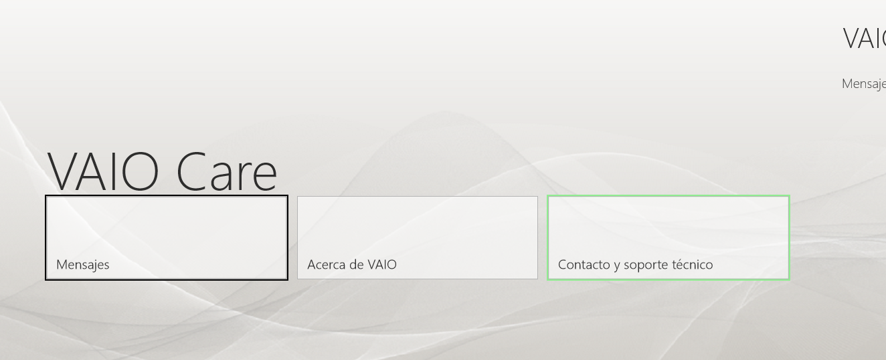

Notas para personalizar mi portatil VAIO.
Es el Vaio que consigo con el contrato con el Banco Santander poniendo mi nomina domiciliada pero con el nombre de Ana Vela dado que el mio esta ya usado en otra oferta similar.
Contrato de fecha 19/12/2012
y tiene 30 meses de duración mínim# Así que puedo dar de baja la cuent#
15/09/2013 no se muestra más información en la web de la cuenta.
8.0.0.08150
32bit/64bit
[InstallationInfo]
InstalledDate=14/03/2014 13:12:39
ProductName=VAIO Care
Version=8.0.0.08150
ProductGUID={E0F928B4-2BB2-4D7E-B16E-2B202CB58EDE}
Product name SVE1512B4E
Model SVE151J11M
01/02/2016 empieza a dar problemas de bateria.
Con enrique más de 5 horas en su casa.
Al arrancar windows8 borra o inutiliza el arranque grub para lanzar ubuntu.
Es necesario cambiar en la bios con el boton ASSIST de EUFI a LEGACY por ejemplo para que diga que no operation system found y luego volverlo a cambiar para que lo encuentre.
Pero al volver a Windows vuelve a pasar
powercfg -h off
en mi vaio con modelo SVE1512B4E se apaga la pantalla al conectarlo a la corriente.
Sin embargo si espero a que realmente quede poca bateriay
no esta activado ni el ahorro de baterio y el brillo es del 100 % se carga y se sigue viendo
El 23/12/2015 lo actualiz# Tarda casí una mañana entre la descarga y la instalación pero parece que va bien.
El plan lo habia cambiado a economizador …
Abandono esta tarea dado que he actualizado a Windows 8.1 y va mejor.
Mi maquina es
Un Sony Vaio
Vaio Control Center te da la información
Nombre de modelo SVE1512B4E
Número de serie 54513845 002653
4 Gb de ram
Pentium cpu B980 2.40 Ghz
Procesador 64 bit
Hasta que no consiga hacer funcionar el botón assist para hacer las copias de recuperación dejo el
Downgrade a Windows 7
Los programas
Y una vez lanzado el programa

cuando se desconfigura el teclado …
setxkbmap -layout es
Hay un uso intensivo de acceso a disco .
Veo que es un programa llamado SkyDrive llega a tener el 100% lo quito.
Verlo así con información del proceso.
https://softwareeducativo.wordpress.com/web-2-0/recursos-web-2-0/skydrive-que-es-para-que-sirve/
http://es.wikipedia.org/wiki/OneDrive
ahora es OneDrive
Artículos comprados
1 unidad
29,50€
TOTAL
http://www.reviversoft.com/es/blog/2013/05/kernel-data-inpage-error/
al final hago el volcado de memoria y parece funcionar 29/07/2015
02/11/2015
vuelve a dar el mismo fallo
Boton derecho del ratón sobre “equipo”, escogemos propiedades, buscamos “configuración avanzada del sistema” y clicamos sobre él, en propiedades de sistema abajo en “inicio y recuperación” vamos a configuración y elegimos en volcado, la opción Volcado de memoria completa.
Aceptamos reiniciamos y se acabaron los pantallazos.
Pero no es asi 06/11/2015
programo un chkdsk C: / f / r / x al reinicio.
22/11/2015 :
Desmonto el disco duro y lo pongo más sujet#
Creo que era eso dado que no se vuelve a repeti# Al estar suelto o un poco suelto no conectaba bien y daba el error al no encontrar S# Pasaba sobre todo al cojerlo de una esquina.
Ha salido un par de veces.
Al final sale al menu de arranque …
hacerle una foto pues no recuerdo cual era la opción par windows ni para ubuntu.
Si vuelve a salir hacerle foto.
http://windows.microsoft.com/es-es/windows-10/fix-sound-problems#v1h=tab01
Abre Inicio, escribe Administrador de dispositivos, y selecciónalo de la lista. En Sonido, vídeo y controladores de juego, selecc. tarj. sonido, ábrela, selecc. Controlador y Actualizar controlador. Si Windows no encuentra un contr. nuevo, busca uno en el sitio web del fabr. del dispos. y sigue las instr.
Si no funciona, desinst. el contr. audio: abre Administrador de dispositivos, haz clic con el botón der. (o mantén pulsado) el contr. audio, selecc. Desinstalar. Reinicia el disp. y Windows intentará reinst. el contr.
Si no funciona, usa el contr. audio gen. incluido en Windows. Haz esto: en Administrador de dispositivos, haz clic con el botón der. en (o mantén pulsado) contr. audio > Actualizar software de controlador… > Examinar el equipo para buscar software de controlador > Dejarme elegirlo de una lista de controladores de dispositivo de mi equipo, selecc. Dispositivo de audio de alta definición, Siguiente, y sigue instrucc. para instalarlo.
arriba